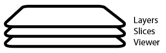

BitmapLayer
A BitmapLayer is an abstraction for a bitmapped image, such as CT scan data. It also provides methods appropriate for a bitmapped image, such as partition.
APEX/F Documentation
Contents

classdef BitmapLayer < Layer
Properties (Private)
level: the threshold for converting the image to a binary mask
min_pixels: minimum pixel count for objects to be kept (see bwareaopen)
properties (Access = private)
level
min_pixels
end
methods (Access = public)
BitmapLayer (Constructor)
Instantiate an instance of BitmapLayer.
function obj = BitmapLayer(parent) obj = obj@Layer(parent); % Set mask configuration obj.level = 0.011; obj.min_pixels = 100; end
hasDataForCopy
See Layer documentation.
function has_data = hasDataForCopy(obj) has_data = true; end
getDataForCopy
See Layer documentation.
function data = getDataForCopy(obj) data = cell(1, 1); data{1} = obj.getCData(); end
setCopyData
See Layer documentation.
function setCopyData(obj, data) obj.setCData(data{1}); end
setThreshold
Set threshold value for convering the image (CData) to a binary mask for finding the maximum internal rectangle.
Parameters
threshold: threshold for converting the bitmap to a masl
function setThreshold(obj, threshold) obj.level = threshold; end
setMinimumPixels
Set the minimum pixels in an object. Any objects with pixel counts below this value will be removed.
Parameters
pixels: minimum number of pixels in an object.
function setMinimumPixels(obj, pixels) obj.min_pixels = pixels; end
findMaximumInternalRectangle
Find the maximum internal rectangle of the bitmap mask. The mask is generated using the threshold value, the default value is suitable for CT scan data.
Returns
x: x co-ordinate in pixels
y: y co-ordinate in pixels
width: width of the rectangle in pixels
height: height of the rectangle in pixels
function [x y width height] = findMaximumInternalRectangle(obj) % Clean the mask half = im2b2(onj.getCData(), obj.level); cleaned = bwareaopen(half, obj.min_pixels); mask = imfill(cleaned, 'holes'); % Find the maximum internal rectangle [C W H] = FindLargestRectangles(mask); [tmp pos] = max(C(:)); [r c] = ind2sub(size(C), pos); % Return values x = c; y = r; width = W(r, c); height = H(r, c); end
partition
Use the HV decomposition technique in order to partition the image. Not yet implemented.
function partition(obj) end
end
end